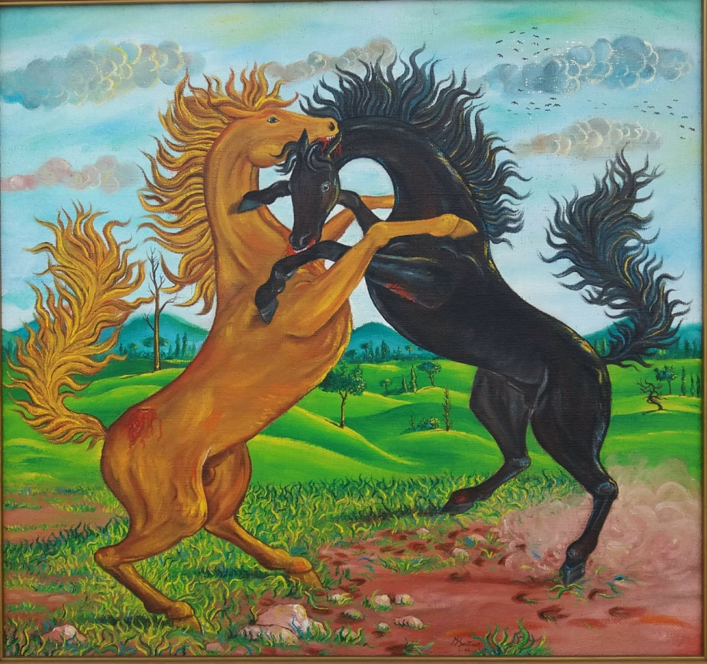

Il metodo
La tecnica
Una tecnica basata sull’istinto.
“Un’arte Espressionista e non Accademica.”
Così Bertino definisce la Sua tecnica, volta a rappresentare all’interno di paesaggi di fantasia l’emozione provata in quell’Istante, lo stato d’animo di quel momento.
Si capisce dunque che l’interesse dell’Artista non è quello di colpire lo spettatore facendo sfoggio della tecnica, ma bensì facendogli provare ciò che Lui stesso prova durante l’atto creativo.
Per Lui fare Arte ha una funzione liberatoria, è rappresentazione e sfogo dello stato d’animo provato in quel momento, è una canalizzazione dell’emozione su tela o tramite pietra, volta a creare qualcosa di unico.
Ma come nascono le sue opere? Qual è il processo che porta l’Artista a realizzare la Sua creazione?
Sono le emozioni stesse a palesarsi, sono loro che fanno sentire al Pittore il bisogno di essere rappresentate. Questa necessità, a detta di Bertino, è talmente tanto avvertita da non riuscire ad essere soppressa. L’unica via, dunque, è quella di canalizzare questo impeto, questo bisogno impellente tramite i Suoi strumenti: pennello, scalpello e, nel plasmare la terracotta, le sue mani.
